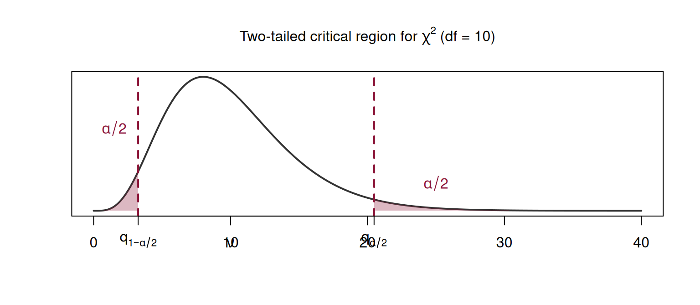

Parametric Hypothesis Tests — Part 3
Tests for Mean and Variance of Normal Populations
Recap from Last Week
In Lecture 6, we established:
- The general framework: \(H_0\) vs. \(H_1\), test statistic, \(\alpha\), critical region
- Type I and Type II errors, power
- The \(p\)-value: smallest \(\alpha\) at which we reject \(H_0\)
- The relationship between CIs and two-tailed tests
. . .
Today: We apply the framework systematically to every test case in the syllabus.
Road Map for Today
| Section | Topic |
|---|---|
| 3.3 | Tests for \(\mu\) (Normal, \(\sigma\) known and unknown) |
| Tests for \(\sigma^2\) (Normal population) | |
| 3.4 | Tests for \(\mu_1 - \mu_2\) (two Normal populations) |
| 3.5 | Large-sample (asymptotic) tests: mean and proportion |
3.3 — Tests for Parameters of Normal Populations
Overview
We consider a random sample \((X_1, X_2, \ldots, X_n)\) from a Normal population \(X \sim N(\mu, \sigma)\).
. . .
We will cover four cases:
- Case 1: Test for \(\mu\) with \(\sigma\) known
- Case 2: Test for \(\mu\) with \(\sigma\) unknown (small sample)
- Case 2’: Test for \(\mu\) with \(\sigma\) unknown and \(n > 30\)
- Case 3: Test for \(\sigma^2\) (or \(\sigma\))
Case 1: Test for \(\mu\), \(\sigma\) Known
Recall: \(z_{\alpha}\) is the value such that \(P(Z > z_{\alpha}) = \alpha\), from the Standard Normal table.
Example 1: Test for \(\mu\), \(\sigma\) known
The nominal capacity of a soft drink bottle is 330 mL. The filling process has \(\sigma = 5\) mL. A random sample of \(n = 40\) bottles has \(\bar{x} = 328.2\) mL. At \(\alpha = 0.05\), test whether the mean capacity differs from 330 mL.
Example 1: Solution
Hypotheses: \(H_0: \mu = 330\) vs. \(H_1: \mu \neq 330\) (two-tailed)
. . .
Test statistic: \(Z_0 = \frac{\bar{X} - 330}{5/\sqrt{40}} \sim N(0,1)\)
. . .
Observed value: \[z_{obs} = \frac{328.2 - 330}{5/\sqrt{40}} = \frac{-1.8}{0.7906} \approx -2.28\]
. . .
Rejection region (two-tailed, \(\alpha = 0.05\)): \[|z_{obs}| \geq z_{0.025} = 1.96\]
Since \(|-2.28| = 2.28 > 1.96\), we reject \(H_0\).
. . .
\(p\)-value: \(p = 2 \times P(Z \geq 2.28) = 2 \times (1 - 0.9887) = 2 \times 0.0113 = 0.0226\)
Case 2: Test for \(\mu\), \(\sigma\) Unknown
Recall: \(S'\) is the corrected sample standard deviation, and \(t_{\alpha,(\nu)}\) is from Table 7 (\(t\)-Student).
Example 2: Test for \(\mu\), \(\sigma\) unknown
An engineer suspects that the mean weight of packages produced by a machine exceeds the nominal value of 100 g. A random sample of \(n = 20\) packages from a Normal population gives \(\bar{x} = 101\) g and \(s' = 3\) g.
Test at \(\alpha = 0.05\).
Example 2: Solution
Hypotheses: \(H_0: \mu \leq 100\) vs. \(H_1: \mu > 100\) (right-tailed)
. . .
Test statistic: \(T_0 = \frac{\bar{X} - 100}{S'/\sqrt{20}} \sim t_{(19)}\)
. . .
Observed value: \[t_{obs} = \frac{101 - 100}{3/\sqrt{20}} = \frac{1}{0.6708} \approx 1.49\]
. . .
Rejection region (right-tailed, \(\alpha = 0.05\)): \[t_{obs} \geq t_{0.05,(19)} = 1.729\]
(Table 7)
. . .
Since \(1.49 < 1.729\), we do not reject \(H_0\).
. . .
Conclusion: At 5%, there is insufficient evidence that the mean weight exceeds 100 g.
Case 2’: Test for \(\mu\), \(\sigma\) Unknown, \(n > 30\)
. . .
This is the same approach as in Case 1, but replacing \(\sigma\) by \(s'\). The approximation is justified by the CLT and by the fact that \(t_{(\nu)} \to N(0,1)\) as \(\nu \to \infty\).
Case 3: Test for \(\sigma^2\) (Variance)
Here \(q_{\alpha}\) denotes the value from the \(\chi^2\) table (Table 6) such that \(P(Q > q_{\alpha}) = \alpha\).
Important: The \(\chi^2\) Distribution is Not Symmetric
Because the \(\chi^2\) distribution is right-skewed, the two-tailed rejection region is not symmetric around the center. The lower critical value is \(q_{1-\alpha/2}\) and the upper is \(q_{\alpha/2}\).
Example 3: Test for \(\sigma^2\)
Consider the test: \(H_0: \sigma^2 \geq 10\) vs. \(H_1: \sigma^2 < 10\), with \(n = 20\) from a Normal population and \(s'^2 = 9\) (i.e., \(s' = 3\)).
Test at \(\alpha = 0.05\).
Example 3: Solution
Test statistic: \[Q_0 = \frac{(n-1)S'^2}{\sigma_0^2} \underset{\text{under } H_0}{\sim} \chi^2_{(19)}\]
. . .
Observed value: \[q_{obs} = \frac{(20-1) \times 9}{10} = \frac{171}{10} = 17.1\]
. . .
Rejection region (left-tailed, \(\alpha = 0.05\)):
We need \(q_{1-\alpha} = q_{0.95}\) from the \(\chi^2\) table with 19 d.f.
From Table 6: \(q_{0.95,(19)} = 10.117\).
Rejection region: \(\left[0\,;\, 10.117\right]\).
. . .
Since \(q_{obs} = 17.1 > 10.117\), we do not reject \(H_0\).
Summary of Cases — Section 3.3
| Parameter | \(\sigma\) | Test Stat. | Distribution | Table |
|---|---|---|---|---|
| \(\mu\) | known | \(Z_0 = \frac{\bar{X}-\mu_0}{\sigma/\sqrt{n}}\) | \(N(0,1)\) | Normal |
| \(\mu\) | unknown, \(n\leq 30\) | \(T_0 = \frac{\bar{X}-\mu_0}{S'/\sqrt{n}}\) | \(t_{(n-1)}\) | Table 7 |
| \(\mu\) | unknown, \(n > 30\) | \(Z_0 = \frac{\bar{X}-\mu_0}{S'/\sqrt{n}}\) | \(\dot\sim N(0,1)\) | Normal |
| \(\sigma^2\) | — | \(Q_0 = \frac{(n-1)S'^2}{\sigma_0^2}\) | \(\chi^2_{(n-1)}\) | Table 6 |
This mirrors the cases from interval estimation — the pivot variables are the same.
Practice Exercise A
A quality inspector measures the temperature of a chemical process. Historical data show \(\sigma = 2.5°\)C. A random sample of \(n = 16\) measurements gives \(\bar{x} = 98.3°\)C.
Test \(H_0: \mu = 100\) vs. \(H_1: \mu \neq 100\) at \(\alpha = 0.01\).
Compute the \(p\)-value.
Practice Exercise A: Solution
a) \(Z_0 = \frac{\bar{X} - 100}{2.5/\sqrt{16}} \sim N(0,1)\)
\[z_{obs} = \frac{98.3 - 100}{2.5/4} = \frac{-1.7}{0.625} = -2.72\]
. . .
Rejection region (two-tailed, \(\alpha = 0.01\)): \(|z_{obs}| \geq z_{0.005} = 2.576\)
Since \(|-2.72| = 2.72 > 2.576\), we reject \(H_0\).
. . .
b) \(p = 2 \times P(Z \geq 2.72) = 2 \times (1 - 0.9967) = 2 \times 0.0033 = 0.0066\)
. . .
Conclusion: At 1%, there is evidence that the process temperature differs from 100°C.
Practice Exercise B
From a Normal population, a sample of \(n = 15\) observations gives \(s' = 5.04\).
Test \(H_0: \sigma^2 = 16\) vs. \(H_1: \sigma^2 \neq 16\) at \(\alpha = 0.10\).
Practice Exercise B: Solution
Test statistic: \[Q_0 = \frac{(n-1)S'^2}{\sigma_0^2} \sim \chi^2_{(14)}\]
\[q_{obs} = \frac{14 \times (5.04)^2}{16} = \frac{14 \times 25.4016}{16} = \frac{355.62}{16} \approx 22.23\]
. . .
Rejection region (two-tailed, \(\alpha = 0.10\)):
From Table 6, \(\nu = 14\): \(q_{0.95,(14)} = 6.571\) and \(q_{0.05,(14)} = 23.685\)
Reject if \(q_{obs} \leq 6.571\) or \(q_{obs} \geq 23.685\).
. . .
Since \(6.571 < 22.23 < 23.685\), we do not reject \(H_0\).
. . .
Conclusion: At 10%, there is no evidence that \(\sigma^2 \neq 16\).
Quick Recap Before the Break
. . .
After the break: Sections 3.4 and 3.5.